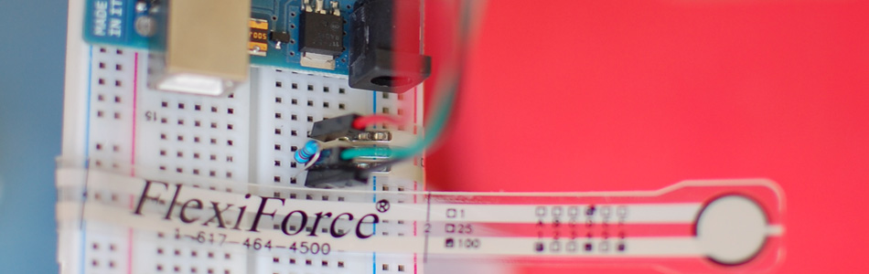

Sensing Weight With A Flexiforce + Arduino

Like the FSR I'm not sure if you can get a really precise weight reading from it, it seems a bit shaky, and the output seems to be logarithmic, not linear. But it does have a much larger range than the FSR, and in general will be better if you you need to sense a range of weights, or need to guess how much water is in a cup based on the weight.
When using the flexiforce, you need to make sure all the weight you want to sense is directed onto the small sensing area. So you may need to make a jig to direct the weight if you want to sense something you put on top of it.
{kind=link}
Hooking it up, and why
The flexiforce sensor ranges its resistance between near infinite when not being touched, to under 25K ohms when you approach its weight limit. When barely touching it, it has a resistance of around 10M ohms.
We can measure that change using one of the Arduino's analog inputs. But to do that, we need a fixed resistor (not changing) that we can use for that comparison (We are using a 10M (1,000,000 ohm) resistor). This is called a voltage divider and divides the 5v between the flexiforce and the resistor.
The analog read on your arduino is basically a voltage meter. At 5V (its max) it will read 1023, and at 0v it will read 0. So we can measure how much voltage is on the flexiforce using the analogRead and we will have our force reading.
The amount of that 5V that each part gets is proportional to its resistance. So if the the flexiforce and the resistor have the same resistance, the 5V is split evenly (2.5V) to each part. (analog reading of 512)
But if the flexiforce is pressed on pretty hard, reading only 25K of resistance, the 1M resistor is going to soak up 40 times as much of that 5V. So the FSR would only get .12V. (analog reading of 25)
And if something is barely pressing on it, the flexiforce may be 5M of resistance, so the flexiforce will soak up 5 times as much of that 5V as the 1M resistor. So the flexiforce would get 4.2V. (analog reading of 852)
Code
The arduino code for this just could not be easier. We are adding some serial prints and delays to it just so you can easily see the readings, but they dont need to be there if you dont need them.
//From the bildr article http://bildr.org/2012/11/flexiforce-arduino/ int flexiForcePin = A0; //analog pin 0 void setup(){ Serial.begin(9600); } void loop(){ int flexiForceReading = analogRead(flexiForcePin); Serial.println(flexiForceReading); delay(250); //just here to slow down the output for easier reading }
Article taken from bildr.org with minor changes - I am the original author of this content